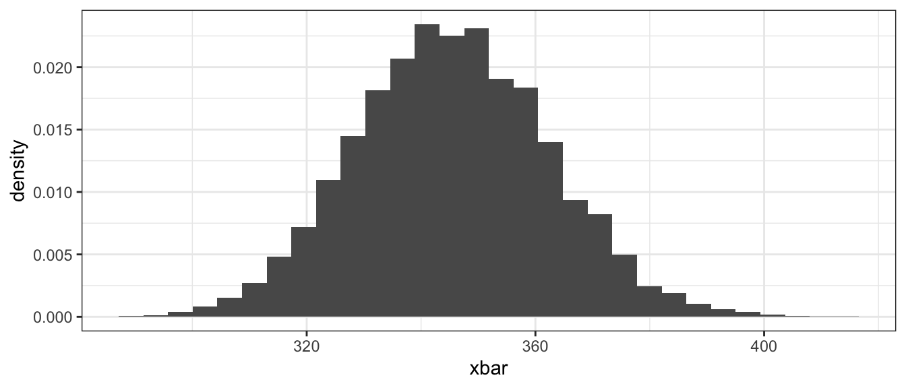

Chapter 5 Confidence Intervals for \(\mu\)
library(ggplot2)
library(dplyr)
# Set default behavior of ggplot2 graphs to be black/white theme
theme_set(theme_bw())5.1 Asymptotic result (\(\sigma\) known)
We know that our sample mean \(\bar{x}\), should be close to the population mean \(\mu\). So when giving a region of values for \(\mu\) that are consistent with the observed data, we would expect our CI formula to be something like \(\left(\bar{x}-d,\;\bar{x}+d\right)\) for some value \(d\). That value of \(d\) should be small if our sample size is big, representing our faith that a large amount of data should result in a statistic that is very close to the true value of \(\mu\). Recall that if our data \(X_{i}\sim N\left(\mu,\,\sigma^{2}\right)\) or our sample size was large enough, then we know
\[\bar{X}\sim N\left(\mu,\,\;\sigma_{\bar{X}}^{2}=\frac{\sigma^{2}}{n}\right)\] or is approximately so. Doing a little re-arranging, we see that \[\frac{\bar{X}-\mu}{\left(\frac{\sigma}{\sqrt{n}}\right)}\sim N\left(0,1\right)\]
So if we take the 0.025 and 0.975 quantiles of the normal distribution, which are \(z_{0.025}=-1.96\) and \(z_{0.975}=1.96\), we could write \[\begin{aligned}0.95 &= P\left[ -1.96\le\frac{\bar{X}-\mu}{\sigma/\sqrt{n}}\le1.96 \right] \\ &= P\left[ -1.96\left(\frac{\sigma}{\sqrt{n}}\right)\le\bar{X}-\mu\le1.96\left(\frac{\sigma}{\sqrt{n}}\right) \right] \\ &= P\left[ \bar{X}-1.96\left(\frac{\sigma}{\sqrt{n}}\right)\le\mu\le\bar{X}+1.96\left(\frac{\sigma}{\sqrt{n}}\right) \right] \end{aligned}\] Which suggests that a reasonable 95% Confidence Interval for \(\mu\) is \[\bar{x}\pm1.96\left(\frac{\sigma}{\sqrt{n}}\right)\] In general for a \(\left(1-\alpha\right)\cdot100\%\) confidence interval, we would use the formula \(\bar{x}\pm z_{1-\alpha/2}\left(\frac{\sigma}{\sqrt{n}}\right)\). Notice that I could write the formula using \(z_{\alpha/2}\) instead of \(z_{1-\alpha/2}\) because the normal distribution is symmetric about 0 and we are subtracting and adding the same quantity to \(\bar{x}\).
The interpretation of a confidence interval is that over repeated sampling, \(100(1-\alpha)\%\) of the resulting intervals will contain the population mean \(\mu\) but we don’t know if the interval we have actually observed is one of the good intervals that contains the mean \(\mu\) or not. Because this is quite the mouthful, we will say “we are \(100\left(1-\alpha\right)\%\) confident that the observed interval contains the mean \(\mu\).”
Example: Suppose a bottling facility has a machine that supposedly fills bottles to 300 milliliters (ml) and is known to have a standard deviation of \(\sigma=3\) ml. However, the machine occasionally gets out of calibration and might be consistently overfilling or under-filling bottles. To discover if the machine is calibrated correctly, we take a random sample of \(n=40\) bottles and observe the mean amount filled was \(\bar{x}=299\) ml. We calculate a \(95\%\) confidence interval (CI) to be \[\begin{aligned} \bar{x} &\pm z_{1-\alpha/2}\left(\frac{\sigma}{\sqrt{n}}\right)\\ 299 &\pm 1.96\left(\frac{3}{\sqrt{40}}\right) \\ 299 &\pm 0.93 \end{aligned}\] and conclude that we are \(95\%\) confident that the that the true mean fill amount is in \(\left[298.07,299.93\right]\) and that the machine has likely drifted off calibration.
5.2 Asymptotoic result (\(\sigma\) unknown)
It is unrealistic to expect that we know the population variance \(\sigma^{2}\) but do not know the population mean \(\mu\). So in calculations that involve \(\sigma\), we want to use the sample standard deviation \(s\) instead.
Our previous results about confidence intervals assumed that \(\bar{X}\sim N\left(\mu,\frac{\sigma^{2}}{n}\right)\) (or is approximately so) and therefore \[\frac{\bar{X}-\mu}{\sqrt{\frac{\sigma^{2}}{n}}}\sim N\left(0,1\right)\] I want to just replace \(\sigma^{2}\) with \(S^{2}\) but the sample variance \(S^{2}\) is also a random variable and incorporating it into the standardization function might affect the distribution. \[\frac{\bar{X}-\mu}{\sqrt{\frac{S^{2}}{n}}}\sim\;???\] Unfortunately this substitution of \(S^{2}\) for \(\sigma^{2}\) comes with a cost and this quantity is not normally distributed. Instead it has a \(t\)-distribution with \(n-1\) degrees of freedom. However as the sample size increases and \(S^{2}\) becomes a more reliable estimator of \(\sigma^{2}\), this penalty should become smaller.

The \(t\)-distribution is often call “Student’s t-distribution” is named after William Gosset who worked at Guinness Brewing and did work with small sample sizes in both the brewery and at the farms that supplied the barley. Because Guinness prevented its employees from publishing any of their work, he published under the pseudonym “Student”.
Notice that as the sample size increases, the t-distribution gets closer and closer to the normal distribution. From here on out, we will use the following standardization formula: \[\frac{\bar{X}-\mu}{\frac{S}{\sqrt{n}}}\sim\;t_{n-1}\] and emphasize that this formula is valid if the sample observations came from a population with a normal distribution or if the sample size is large enough for the Central Limit Theorem to imply that \(\bar{X}\) is approximately normally distributed.
Substituting the sample standard deviation into the confidence interval formula, we also substitute a t-quantile for the standard normal quantile. We will denote \(t_{n-1}^{1-\alpha/2}\) as the \(1-\alpha/2\) quantile of a \(t\)-distribution with \(n-1\) degrees of freedom. Therefore we will use the following formula for the calculation of \(100\left(1-\alpha\right)\%\) confidence intervals for the mean \(\mu\): \[\bar{x}\pm t_{n-1}^{1-\alpha/2}\left(\frac{s}{\sqrt{n}}\right)\]
Notation: We will be calculating confidence intervals for the rest of the course and it is useful to recognize the skeleton of a confidence interval formula. The basic form is always the same \[Estimate\;\pm\,t_{df}^{1-\alpha/2}\,\,Standard\,Error\left(\,Estimate\,\right)\] In our current problem, \(\bar{x}\) is our estimate of \(\mu\) and the estimated standard deviation (which is commonly called the standard error) is \(s/\sqrt{n}\) and the appropriate degrees of freedom are \(df=n-1\).
Example: Suppose we are interested in calculating a \(95\%\) confidence interval for the mean weight of adult black bears. We collect a random sample of \(40\) individuals (large enough for the CLT to kick in) and observe the following data:
bears <- data.frame(weight =
c(306, 446, 276, 235, 295, 302, 374, 339, 624, 266,
497, 384, 429, 497, 224, 157, 248, 349, 388, 391,
266, 230, 621, 314, 344, 413, 267, 380, 225, 418,
257, 466, 230, 548, 277, 354, 271, 369, 275, 272))
xbar <- mean(bears$weight)
s <- sd( bears$weight)
cbind(xbar, s)## xbar s
## [1,] 345.6 108.8527Notice that the data do not appear to come from a normal distribution, but a slightly heavier right tail. We’ll plot the histogram of data along with a normal distribution with the same mean and standard deviation as our data.
normal.data <- data.frame(weight=seq(100,700,length=1000)) %>%
mutate( y = dnorm(weight, mean=xbar, sd=s))
ggplot() +
labs(y='density') +
geom_area( data=normal.data, aes(x=weight, y=y), fill='light blue' ) +
geom_histogram(data=bears, aes(x=weight, y=..density..),
binwidth=30, alpha=.6) 
The observed sample mean is \(\bar{x}=345.6\) pounds and a sample standard deviation \(s=108.8527\) pounds. Because we want a \(95\%\) confidence interval \(\alpha=0.05\). Using t-tables or the following R code
## [1] 2.022691we find that \(t_{n-1}^{1-\alpha/2}=2.022691\). Therefore the \(95\%\) confidence interval is \[\bar{x} \pm t_{n-1}^{1-\alpha/2}\left(\frac{s}{\sqrt{n}}\right)\] \[345.6 \pm 2.022691\left(\frac{108.8527}{\sqrt{40}}\right)\] \[345.6 \pm 34.8\] or \(\left(310.8, \, 380.4\right)\) which is interpreted as “We are 95% confident that the true mean \(\mu\) is in this interval” which is shorthand for “The process that resulted in this interval (taking a random sample, and then calculating an interval using the algorithm presented) will result in intervals such that 95% of them contain the mean \(\mu\), but we cannot know if this particular interval is one of the good ones or not.”
We can wonder how well this interval matches up with the interval we would have gotten if we had used the bootstrap method to create a confidence interval for \(\mu\). In this case, where the sample size \(n\) is relatively large, the Central Limit Theorem is certainly working and the distribution of the sample mean certainly looks fairly normal.
SampDist <- mosaic::do(10000) * {
mosaic::resample(bears) %>%
summarise(xbar=mean(weight))
}
ggplot(SampDist, aes(x=xbar, y=..density..)) +
geom_histogram()
Grabbing the appropriate quantiles from the bootstrap estimate of the sampling distribution, we see that the bootstrap \(95\%\) confidence interval matches up will with the confidence interval we obtained from asymptotic theory.
## 2.5% 97.5%
## 313.6244 380.7750Example: Assume that the percent of alcohol in casks of whiskey is normally distributed. From the last batch of casks produced, the brewer samples \(n=5\) casks and wants to calculate a \(90\%\) confidence interval for the mean percent alcohol in the latest batch produced. The sample mean was \(\bar{x}=55\) percent and the sample standard deviation was \(s=4\) percent.
\[\bar{x} \pm t_{n-1}^{1-\alpha/2}\left(\frac{s}{\sqrt{n}}\right)\]
## [1] 2.131847\[55 \pm 2.13\left(\frac{4}{\sqrt{5}}\right)\] \[55 \pm 3.8\]
Question: If we wanted a \(95\%\) confidence interval, would it have been wider or narrower?
Question: If this interval is too wide to be useful, what could we do to make it smaller?
5.3 Sample Size Selection
Often a researcher is in the position of asking how many sample observations are necessary to achieve a specific width of confidence interval. Let the margin of error, which we denote \(ME\), be the half-width desired (so the confidence interval would be \(\bar{x}\pm ME\)). So given the desired confidence level, and if we know \(\sigma\), then we can calculate the necessary number of samples to achieve a particular \(ME\). To do this calculation, we must also have some estimate of the population standard deviation \(\sigma\).
\[ME=z_{1-\alpha/2}\left(\frac{\sigma}{\sqrt{n}}\right)\] and therefore \[n\approx\left[z_{1-\alpha/2}\left(\frac{\sigma}{ME}\right)\right]^{2}\]
Notice that because \[n\propto\left[\frac{1}{ME}\right]^{2}\] then if we want a margin of error that is twice as precise (i.e. the CI is half as wide) then we need to quadruple our sample size! Second, this result requires having some knowledge of \(\sigma\). We could acquire an estimate through: 1. a literature search 2. a pilot study 3. expert opinion.
A researcher is interested in estimating the mean weight of an adult elk in Yellowstone’s northern herd after the winter and wants to obtain a \(90\%\) confidence interval with a half-width \(ME=10\) pounds. Using prior collection data from the fall harvest (road side checks by game wardens), the researcher believes that \(\sigma=60\) lbs is a reasonable standard deviation number to use. \[\begin{aligned} n &\approx \left[ z_{0.95} \left(\frac{\sigma}{ME}\right)\right]^{2} \\ &= \left[1.645\left(\frac{60}{10}\right)\right]^{2} \\ &= 97.41 \end{aligned}\]
Notice that I don’t bother using the \(t\)-distribution in this calculations because because I am assuming that \(\sigma\) is known. While this is a horrible assumption, the difference between using a \(t\) quantile instead of \(z\) quantile is small and what really matters is how good the estimate of \(\sigma\) is. As with many things, the quality of the input values is reflected in the quality of the output. Typically this sort of calculation is done with only a rough estimate of \(\sigma\) and therefore I would subsequently regard the resulting sample size \(n\) as an equally rough estimate.
We could be a bit more precise and use the \(t\)-quantile, but because the degrees of freedom depend on \(n\) as well, then we would have \(n\) on both sides of the equation and there is no convenient algebraic solution to solving for \(n\). Later on we’ll use an R function that accounts for this, but for now we will use the rough approximation.
5.4 Exercises
An experiment is conducted to examine the susceptibility of root stocks of a variety of lemon trees to a specific larva. Forty of the plants are subjected to the larvae and examined after a fixed period of time. The response of interest is the logarithm of the number of larvae per gram of of root stock. For these 40 plants, the sample mean is \(\bar{x}=11.2\) and the sample standard deviation is \(s=1.3\). Use these data to construct a \(90\%\) confidence interval for \(\mu\), the mean susceptibility of lemon tree root stocks from which the sample was taken.
A social worker is interested in estimating the average length of time spent outside of prison for first offenders who later commit a second crime and are sent to prison again. A random sample of \(n=100\) prison records in the count courthouse indicates that the average length of prison-free life between first and second offenses is \(4.2\) years, with a standard deviation of \(1.1\) years. Use this information to construct a \(95\%\) confidence interval for \(\mu\), the average time between first and second offenses for all prisoners on record in the county courthouse.
A biologist wishes to estimate the effect of an antibiotic on the growth of a particular bacterium by examining the number of colony forming units (CFUs) per plate of culture when a fixed amount of antibiotic is applied. Previous experimentation with the antibiotic on this type of bacteria indicates that the standard deviation of CFUs is approximately \(4\). Using this information, determine the number of observations (i.e. cultures developed) necessary to calculate a \(99\%\) confidence interval with a half-width of \(1\).
In the R package
Lock5Data, the datasetFloridaLakescontains information about the mercury content of fish in 53 Florida lakes. For this question, we’ll be concerned with the average ppm of mercury in fish from those lakes which is encoded in the columnAvgMercury.- Using the bootstrapping method, calculate a 95% confidence interval for \(\mu\), the average ppm of mercury in fish in all Florida lakes.
- Using the asymptotic approximations discussed in this chapter, calculate a 95% confidence interval for \(\mu\), the average ppm of mercury in fish in all Florida lakes.
- Comment on the similarity of these two intervals.
In the R package
Lock5Data, the dataset Cereal contains nutrition information about a random sample of 30 cereals taken from an on-line nutrition information website (see the help file for the dataset to get the link). For this problem, we’ll consider the column Sugars which records the grams of sugar per cup.- Using the bootstrapping method, calculate a 90% confidence interval for \(\mu\), the average grams of sugar per cup of all cereals listed on the website.
- Using the asymptotic approximations discussed in this chapter, calculate a 90% confidence interval for \(\mu\), the average grams of sugar per cup of all cereals listed on this website.
- Comment on the similarity of these two intervals.
- We could easily write a little program (or pay an undergrad) to obtain the nutritional information about all the cereals on the website so the random sampling of 30 cereals is unnecessary. However, a bigger concern is that the website cereals aren’t representative of cereals Americans eat. Why? For example, consider what would happen if we added 30 new cereals that were very nutritious but were never sold.